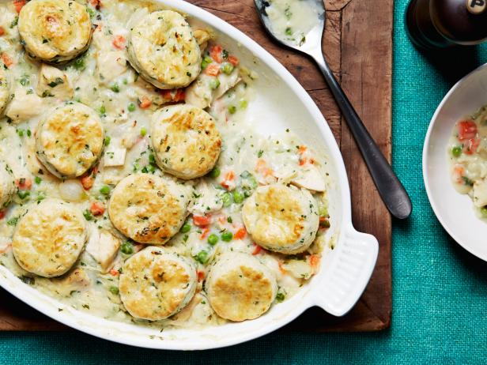
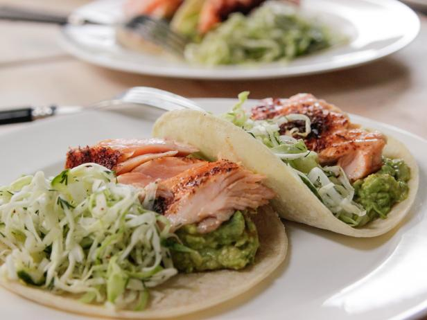
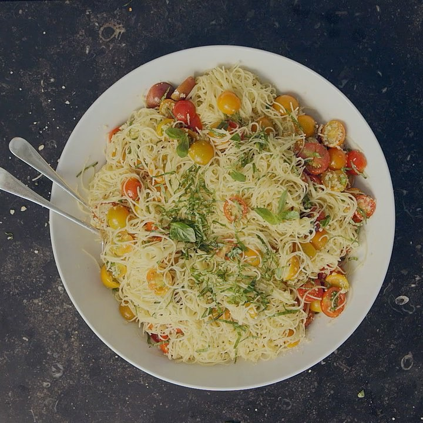

Ina Rosenberg Garten is an American author and host of the Food Network program Barefoot Contessa, and a former staff member
of the White House Office of Management and Budget. Garten had no formal training; she taught herself culinary techniques
with the aid of French and New England cookbooks. Later, she relied on intuition and feedback from friends and customers
to refine her recipes. She was primarily mentored by Eli Zabar (owner of Eli's Manhattan and Eli's Breads) and food
connoisseur Martha Stewart. Among her dishes are cœur à la crème, celery root remoulade, pear clafouti, and a simplified
version of beef bourguignon. Her culinary career began with her gourmet food store, Barefoot Contessa; Garten then
expanded her activities to several best-selling cookbooks, magazine columns, self-branded convenience products, and
a popular Food Network television show.

Chicken Stew $40
A Chicken Stew

Salmon Tacos $30
Delicious Salmon Tacos

Summer Garden Pasta $20
A Pasta that's perfect for a trip to the garden in the summer.